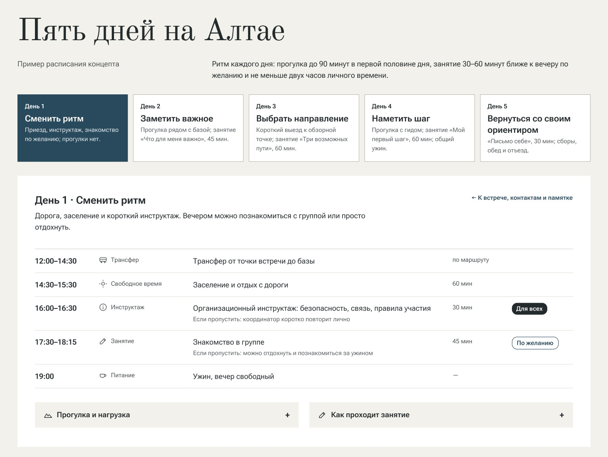
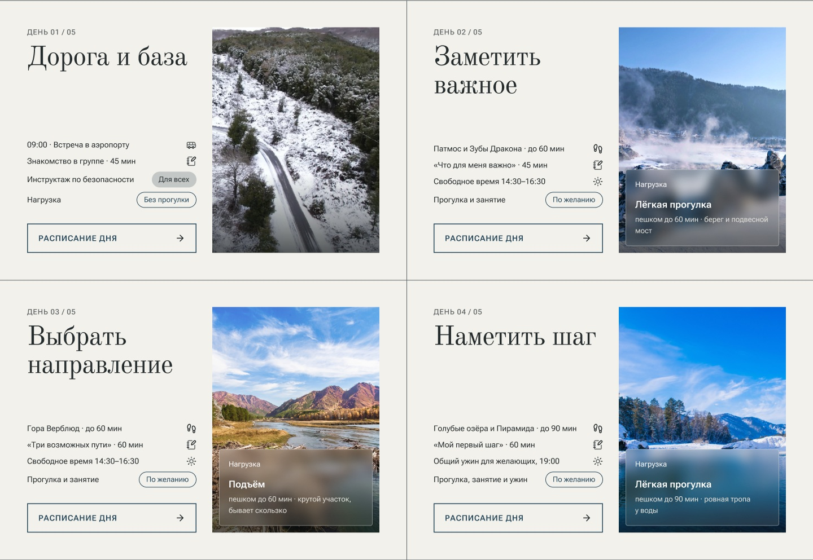
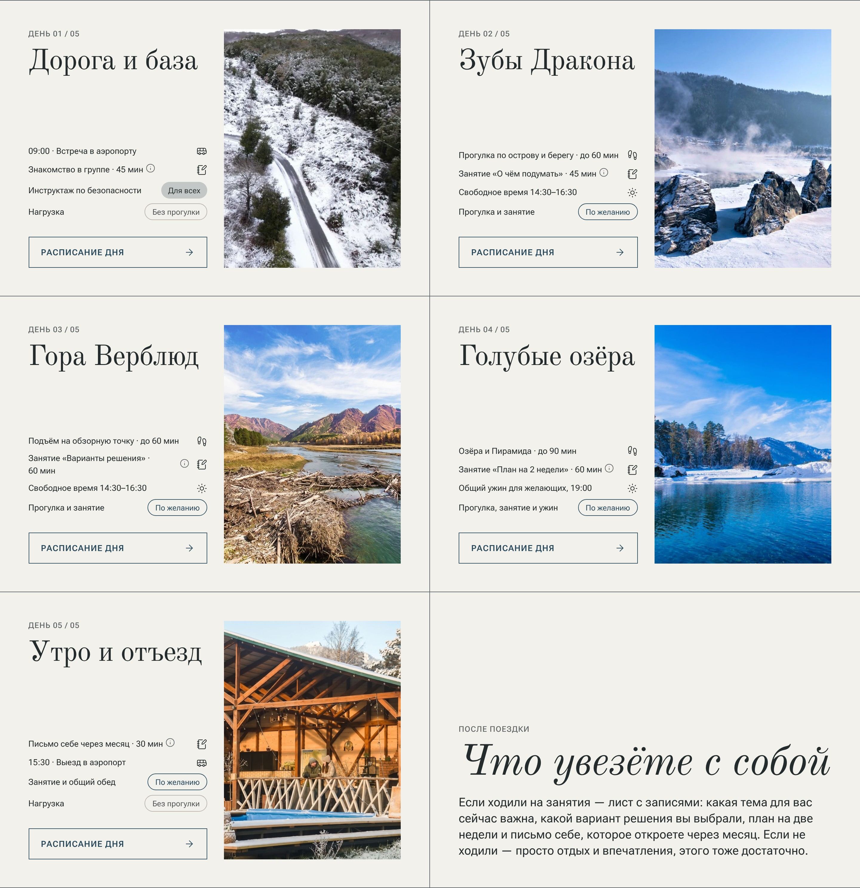

How the programme block changed: from one day in a table to five day chapters that show the whole trip.
01Initial exploration
Day tabs, one timetable
The programme showed one day at a time: time, activity type, duration and a tag for everyone or optional. The first hi-fi version kept this structure and refined only the icons and copy.

Wireframe v1
02Structural reconsideration
One chapter per day
After internal review the table gave way to five day chapters shown together: a photo, three key lines, the walking load and a link to the full day schedule.

UI v2 · after internal review, before usability testing

Final concept · working prototype
03Refined experience
Five chapters, named after places
After usability testing the chapters were refined: each day is named after its place, sessions carry short hints and the closing card says what you take home.